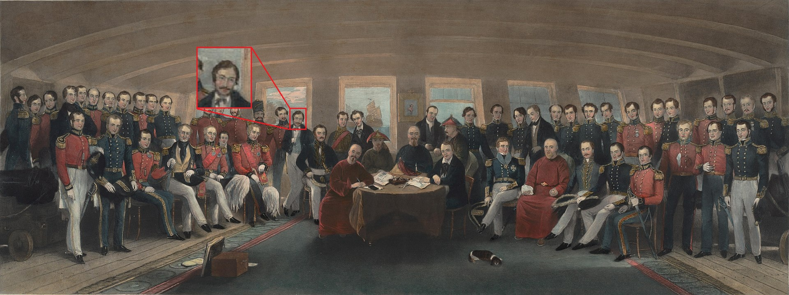

Duty & Service
The 1840s represented a period of significant transition for Stanley Trafalgar Rawlinson — a decade in which he might even be said to have displayed a certain restlessness, as he sought to define his role in a changing empire and to reconcile his adventurous nature with the constraints of formal service.
1839–1840: A Soldier in Search of Purpose

Stanley, 1843
In September 1839, fresh from his travels in Central Asia and with a modest fortune to his name, Stanley purchased a commission in the British Army at the cavalry rank of Cornet. He joined the Royal Military College at Sandhurst, at that time still a relatively new institution, for his initial officer training. Normally, cadets entered between sixteen and eighteen years of age for a two-year course of study, but Stanley, already in his mid-twenties and with extensive field experience, was accepted under an accelerated programme designed for older entrants.
By contemporary accounts, Stanley excelled at Sandhurst. His reports describe him as "a man of evident intelligence and spirit, with a natural command of men and tongue for diplomacy." He graduated in the spring of 1840 and was gazetted into the 10th Royal Hussars at the rank of First Lieutenant.
The regiment was at that time billeted in Dorchester, where Stanley's first taste of soldiering involved the less-than-glamorous duty of aiding civil authorities in extinguishing a major fire in neighbouring Fordington. Shortly after, the regiment was redeployed to Northampton — and it was there that Stanley's military career came to its abrupt and somewhat undistinguished conclusion.
The precise reasons for his resignation remain uncertain, but a recently surfaced letter from his close friend Lieutenant James W. Windham offers a colourful, if unflattering, account of the affair:

Lt. Windham's letter, 1840
"…[Stanley] indignantly thrust the plate back at the slop jockey, retorting that the item on question bore more in common with a gazpacho than a yorkie, being 'mostly liquid, cold as the grave, and bloody unpleasant'. Cook did not like this one bit, thrusting a fork into the offending item and brandishing it in Stanley's face, whereupon Stanley plucked it off and balanced it neatly on the cove's head. That was when it really got heated, and blows were exchanged… Stanley delivered the parting shot, announcing that he would 'rather eat Corporal Trotter's trench socks' than anything this 'gastronomical troglodyte seems inclined to fashion from his own naval fluff'. With that, Stanley picked up the sad fallen little yorkie, squashed it into cook's face and followed it up with an uppercut that would have felled a destrier!"
By June 1840, he had resigned his commission, his soldiering days over almost before they had begun.
1841: The Foreign Service Beckons

Palmerston's letter of appointment, 1841
If his departure from the Army was inglorious, his next step was fortuitous. In early 1841, Stanley first encountered the formidable political figure Henry John Temple, the 3rd Viscount Palmerston — then Foreign Secretary and soon to become one of the great architects of Victorian foreign policy. The two men likely met at a gathering hosted by a mutual friend, Lord Humber, a Tory backbencher and old naval acquaintance of Stanley's father.
Palmerston, ever quick to recognise ability in unconventional candidates, seems to have been impressed by Stanley's intellect and experience in Asia. A letter dated January 1841 confirms that Palmerston arranged for Stanley to enter the Foreign Service, with the expectation that he would eventually be posted to Hong Kong.
That same year, however, the Whig government fell following a vote of no confidence, and Palmerston was briefly cast to the Opposition benches. Yet Stanley's appointment survived the political upheaval, suggesting his selection had merit beyond patronage alone.
1842–1846: The Hong Kong Years

Hong Kong, c. 1842
Stanley's entry into the diplomatic corps coincided with the closing stages of the First Opium War (1839–1842), in which two of his brothers served — one fatally. As Britain consolidated its influence in China, the cession of Hong Kong Island was agreed in January 1841, though formal ratification would not come until the Treaty of Nanking in August 1842.
Stanley departed for the East in December 1841, enduring the months-long sea voyage via the Cape before finally disembarking at Hong Kong in May 1842. As a junior official, he played no major role in the treaty negotiations but was present at the signing aboard HMS Cornwallis — an occasion which he described in a letter home as "a sober and magnificent affair, somewhat marred by the smell of the river and the extreme sullenness of our Chinese counterparts."

Nanking, 1842
During his three years in Hong Kong, Stanley applied his linguistic abilities to mastering Cantonese and Mandarin, while also cultivating relationships with local merchants and officials that would prove invaluable in subsequent postings. His facility with languages and his instinctive grasp of local customs earned him early promotion, and by 1845 he had risen to the post of Acting Consul — a role that gave him his first real taste of independent diplomatic responsibility.
The Crème Brûlée Incident (1844)

Stanley's letter to Palmerston, 1844

Palmerston's reply, 1844
Perhaps the most celebrated episode of Stanley's Hong Kong tenure is the so-called Crème Brûlée Incident of 1844 — an exchange which has since become something of a legend in Foreign Office circles. The precise details remain disputed, but it is known that Stanley dispatched a lengthy memorandum to Palmerston regarding the proper preparation of the dessert at a state dinner, and that Palmerston's reply — brief, acidic, and entirely unhelpful — managed simultaneously to chastise the author and to provide no useful guidance whatsoever.
The exchange was subsequently circulated in Whitehall for the amusement of senior officials, and it is widely considered the origin of Rawlinson's lasting nickname within the Foreign Office: "the Impertinent Dispatch."
1846: Return and Further Duties

Internal FO memo, 1846
By 1846, Stanley had returned to London, where he spent the better part of two years in the Foreign Office. His experience in Asia had made him something of a specialist, and he was frequently consulted on matters of Eastern policy. By all accounts, these years in Whitehall were among the least satisfying of his career — he found the bureaucratic rhythms of London office life as stifling as he had found Bombay's colonial rituals a decade earlier, and he frequently lobbied his superiors for a new overseas posting.
His persistence, combined with Palmerston's return to the Foreign Office following the fall of Peel's government, eventually bore fruit. In 1849, he was assigned to Constantinople — and the next chapter of his remarkable life was about to begin.